Topic 9.2 · Linear Graphs and y = mx + c · Lesson 2 of 7
Tables of Values
Before a straight line can be drawn, it first has to be found - and the fastest way to find a set of points that all sit on the same line is to build a table of values from its equation. Today you'll learn to generate coordinate pairs from an equation, ready to plot.
By the end you’ll know…
A table of values generates coordinate pairs by substituting chosen x values into the equation.
Each column of the table is one point on the line.
Substituting a negative x value needs brackets, so that the sign stays attached to the number.
Where x and sit on the same side, the equation is rearranged to make the subject before substituting.
Three points are enough to draw a straight line, the third acting as a check on the other two.
By the end you can
G4Draw a linear graph from a completed table of values.
G5Complete a table of values where x and y are on the same side of the equation, rearranging first.
Work down the page at your own pace. Write every answer in your book first, then click to check it.
01
Do Now
About 5 minutes
1
What is the difference between an expression and an equation?
An expression is one or more terms with no equals sign (e.g. ; an equation says two expressions are equal and is only true for particular values (e.g.
2
In the formula A = lw, which letter is the subject?
A.
3
If find when
4
If find when
5
If find when
6
If find when
Remember these?
LAST LESSONA line falls units for every units it moves right. Find its gradient.
LAST WEEK pens and pencils are split into identical packs with nothing left over. What is the greatest number of packs?
HCF(24, packs.
LAST TERMState the order of rotational symmetry of a regular pentagon.
LAST YEARSolve
so
02
Learn
Read each card, then follow the worked examples one step at a time.
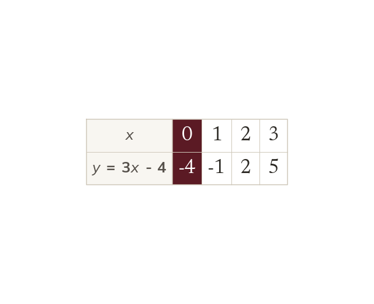
Building the table
Substitute chosen x-values into the equation, one at a time. Each completed column is one point on the line.
A table of values is generated by substituting chosen x-values into an equation, one at a time; each completed column gives one coordinate pair, and each pair is one point on the line.
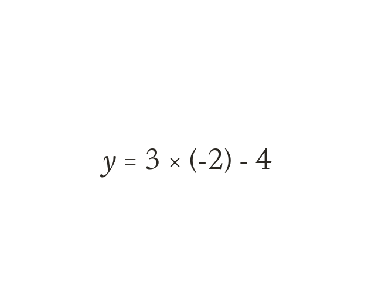
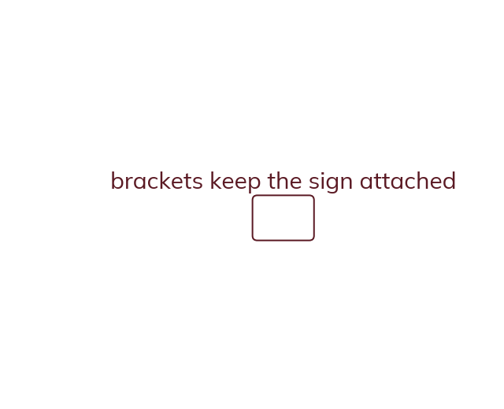
Substituting a negative
Put a negative x-value in brackets before substituting. The bracket keeps the sign attached to the number.
When the x-value being substituted is negative, put it in brackets before working out the rest of the expression, so the negative sign stays attached to the number rather than being lost.
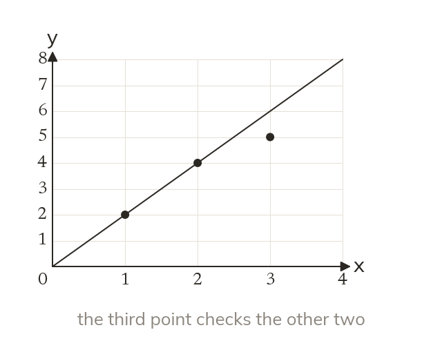
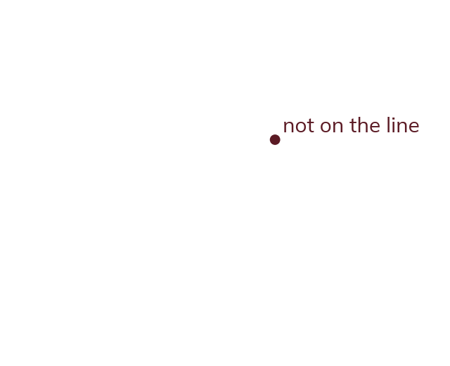
The third point as a check
Two points draw a straight line. A third point off the line signals an error.
Three points are enough to draw a straight line - the third acts as a check: if it doesn't lie on the line through the other two, an error has been made somewhere.
WORKED EXAMPLE A
Complete the table of values for using then plot the points and draw the line.
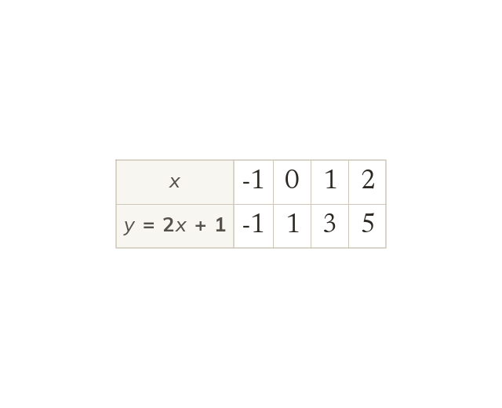
WORKED EXAMPLE B
Using the same table, check that the point for lies on the line drawn through the points for and
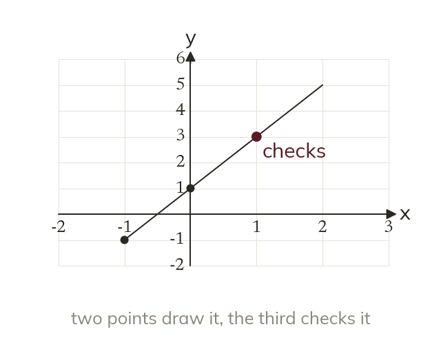
YOUR TURN · a
Complete the table for using
YOUR TURN · b
Complete the table of values for using then plot the points and draw the line, checking the point for lies on it. (Hint: put each negative in brackets before you multiply.)
The point for is and it does lie on the line.
YOUR TURN · c
Find when in
YOUR TURN · d
Complete the table of values for using then plot the points and draw the line, using the fourth point as a second check. (This equation has a negative coefficient of - take extra care with the brackets.)
The fourth point lies on the line, which is the second check.
03
Check your understanding
Pick an answer. If it's wrong, the feedback tells you which mistake it was.
For what is when ?
Yes.
Not quite. x is : Use brackets.
Not quite. then
Not quite. Keep subtracting.
A table of values for gives and What does this tell you?
Yes. At not That point is wrong.
Not quite. The third point is a check. At so something's wrong.
Not quite. Check every point. At not
Not quite. Never bend the line. At so fix the point.
A table of values for is being completed for Which row correctly shows this entry?
Yes. x stays ;
Not quite. stays in the column:
Not quite. Work out :
Not quite. Keep x as Only y is worked out.
04
Practise
mark as you go
Checkpoint. Complete a table of values for using then plot the points, draw the line, and state whether the point for confirms the line is correct. Show your working - I'll check it before you move on.Show your teacher before you go on
Complete a table for using Plot the points and draw the line.
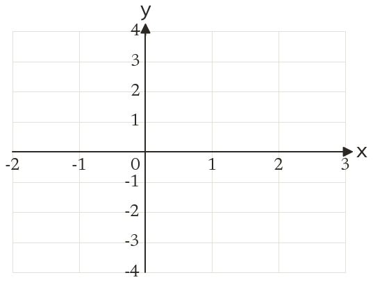
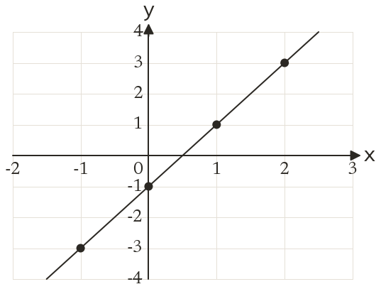
5
Ola's table for gives when What is wrong?
She lost the sign:
EXT
In a table for when Find a, then find when
so
05
Learn
Read each card, then follow the worked examples one step at a time.
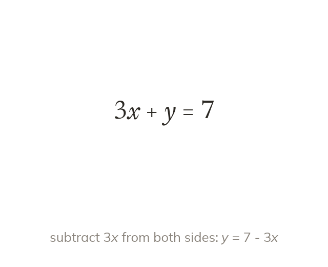
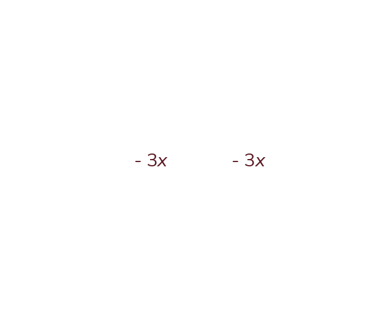
Rearrange first
With x and on the same side, the gradient and intercept are hidden. Rearrange to make the subject first.
When x and are on the same side of an equation, the gradient and intercept aren't visible directly - the equation must first be rearranged to make the subject, using the same inverse operations as solving an equation.
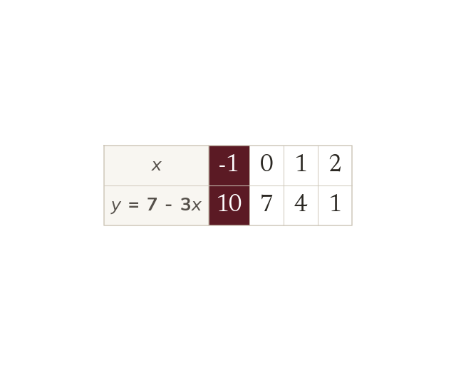
Then the table as before
Once y is the subject, complete the table as before. Use brackets for any negative x-value.
Once y is the subject, a table of values is completed exactly as before: substitute each chosen x value in turn, using brackets for any negative value.
WORKED EXAMPLE C
Complete a table of values for using
Write the equation
Subtract x from both sides
When x is
When x is
When x is
WORKED EXAMPLE D
Complete a table of values for using
Write the equation
Subtract from both sides
When x is
When x is
When x is
YOUR TURN · e
Rearrange to make the subject.
YOUR TURN · f
Complete a table of values for using Rearrange to make the subject first. (Hint: whatever you do to one side, do to the other - subtract from both sides.)
rearranged, - x, so
YOUR TURN · g
Rearrange to make the subject.
YOUR TURN · h
Complete a table of values for using Rearrange to make the subject first. (The coefficient of has changed from We Do - check you're subtracting not
rearranged, so
06
Check your understanding
Pick an answer. If it's wrong, the feedback tells you which mistake it was.
To complete a table of values for at what should you do first?
Yes. Make the subject first: so
Not quite. gives not
Not quite. The x counts: so
Not quite. Take x away:
To complete a table of values for at what is ?
Yes.
Not quite. x is : so
Not quite. Rearrange correctly: so
Not quite. The term counts:
A table for needs completing at What is ?
Yes.
Not quite. x is : so
Not quite. Rearrange correctly: so
Not quite. The term counts:
07
Practise
mark as you go
Checkpoint. Complete a table of values for using rearranging first to make the subject. Show your working - I'll check it before you move on.Show your teacher before you go on
1
Complete a table of values for using
2
Complete a table of values for using
3
Complete a table of values for y - using
Add to both sides:
4
Complete a table of values for using
Divide every term by :
5
Ben uses and gets when What is wrong?
EXT
Complete a table of values for using
08
Exit ticket
On paper, on your own, then check
1
Explain why brackets matter when substituting a negative x value into an equation, and explain what the third point in a table of values is used for.
Brackets preserve the sign attached to the value; third point checks the line is drawn correctly.
2
Complete a table of values for using then plot the points and draw the line.
3
Complete a table of values for using rearranging first to make the subject.
Finished? Next lesson: 9.2.3 Drawing Linear Graphs.
Practise more
After the lesson, or whenever you want more
Dr Frost
Log in, then search for a code to practise that skill.
267aComplete a table of values for a linear graph with a positive integer coefficient of x
267eComplete a table of values and plot the corresponding linear graph.